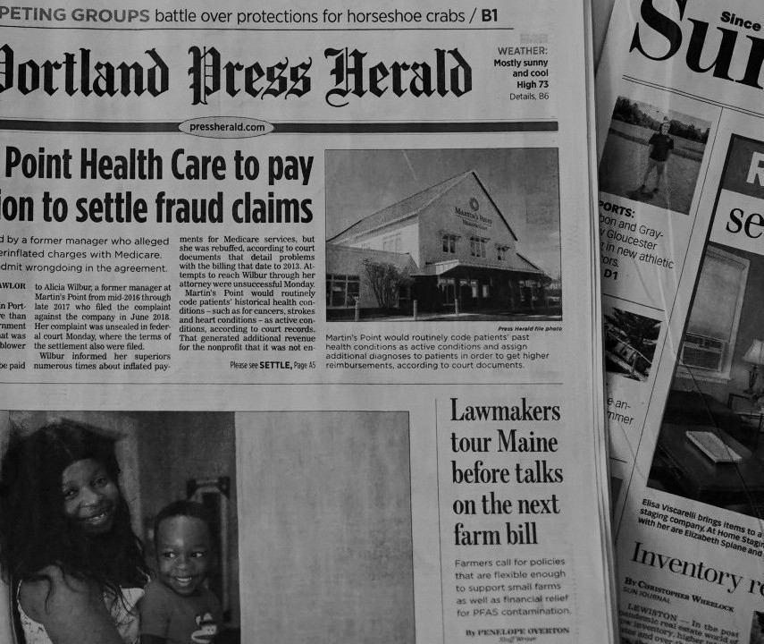

How to Prevent Rape
By Bono Sebastian C. Tan, November 28, 2024


Preventing rape is a complex issue that requires collective community responsibility, proactive measures, and a shift toward a culture of respect and safety. One key strategy is bystander intervention, which encourages individuals to act when witnessing potentially dangerous situations. This can include distracting a person at risk, stepping in directly to offer support, or contacting authorities when necessary. Such actions can disrupt dangerous situations and protect vulnerable individuals.
Educating people, especially youth, on the concepts of consent and healthy relationships is crucial. This involves teaching children from a young age about bodily autonomy, empowering them to understand that they have the right to set boundaries. For teenagers and adults, comprehensive education on consent and respect in all forms of relationships is vital. This fosters mutual respect and reduces the likelihood of assault by promoting a culture that understands and values boundaries.
Personal safety measures also play an important role. Staying aware of one's surroundings, trusting instincts, and avoiding isolated areas or situations with people who are not trusted can reduce vulnerability. At social gatherings, staying with trusted groups, monitoring the intake of alcohol or other substances, and ensuring a buddy system are recommended.
Promoting community awareness and providing resources for survivors and those seeking guidance is another critical component of prevention. Community members should know about support systems, legal protections, and avenues to report and address sexual violence. Together, these educational, social, and practical measures can significantly help to prevent rape and create safer environments for all individuals.
What is Rape?
The Role of Technology in Sexual Assault
Effects of Rape
Challenges in Reporting Sexual Assault

How Media Portrays Sexual Assault
The Importance of Rape Awareness